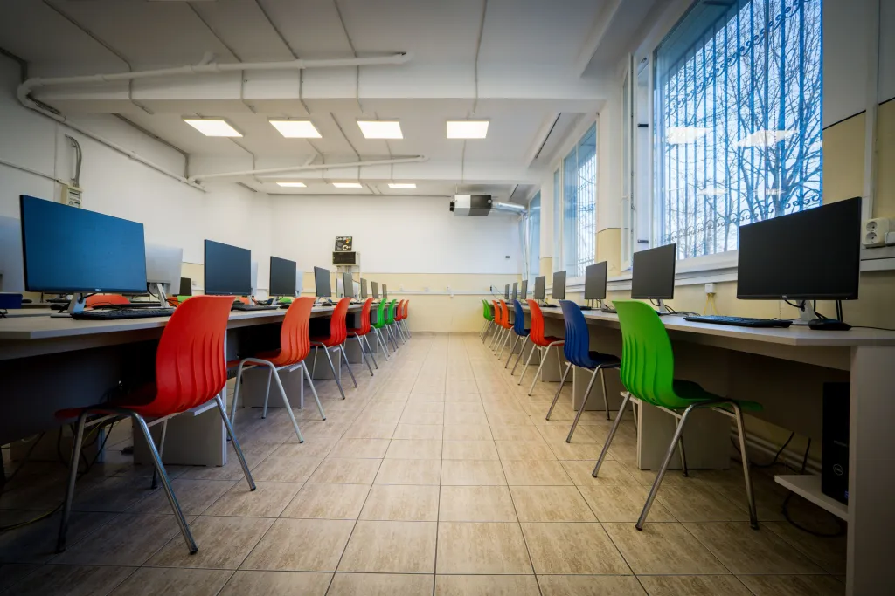

Universitatea din București
Universitatea din București este una dintre cele mai importante și prestigioase instituții de învățământ superior și cercetare din România, fondată în anul 1864 prin decretul domnitorului Alexandru Ioan Cuza.
Cu o istorie bogată de peste un secol și jumătate, UB a contribuit fundamental la dezvoltarea și modernizarea societății românești, formând zeci de generații de specialiști de elită recunoscuți la nivel global.


Facultatea de Matematică și Informatică (FMI)
FMI este una dintre facultățile fondatoare ale Universității din București. De-a lungul deceniilor, a reprezentat pilonul principal al cercetării în științele exacte din România.
Departamentul de Informatică este recunoscut la nivel internațional pentru corpul profesoral de excepție, proiectele de cercetare inovatoare și rezultatele remarcabile obținute de studenți la olimpiade și competiții internaționale de programare (ACM ICPC, hackathoane globale, etc.).


Viziunea și Misiunea CTI
Programul de studii Calculatoare și Tehnologia Informației (CTI) din cadrul FMI a fost creat din dorința de a îmbina fundamentul teoretic solid al informaticii cu rigoarea și aplicabilitatea ingineriei.
Într-o lume în care software-ul controlează dispozitive fizice tot mai complexe, de la roboți autonomi la infrastructuri cloud la scară globală, inginerii CTI sunt pregătiți să înțeleagă și să proiecteze întregul sistem, atât din punct de vedere hardware, cât și software.
Obiectivul nostru este să formăm specialiști capabili nu doar să scrie cod eficient, ci și să arhitecteze rețele de calculatoare, să dezvolte sisteme de operare, să integreze componente de electronică digitală și să implementeze soluții bazate pe Inteligență Artificială.

Relocarea Temporară (Modernizare Sediul Central)
Pentru a asigura cele mai bune condiții de studiu, sediul istoric al facultății a intrat într-un proces amplu de consolidare și modernizare. Pe durata acestor lucrări, o mare parte a activităților didactice și de laborator a fost relocată temporar în spații moderne, cum ar fi clădirea PB Tower.
Citește mai mult despre Relocare →